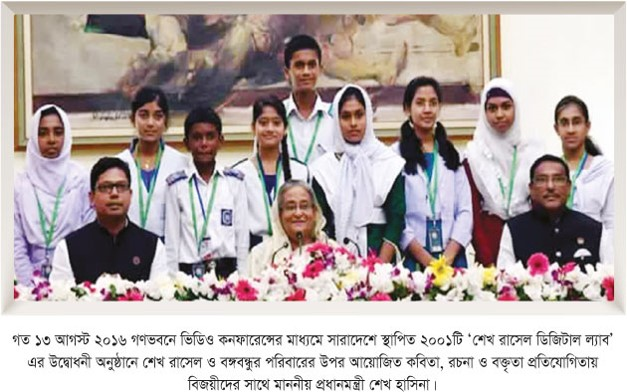
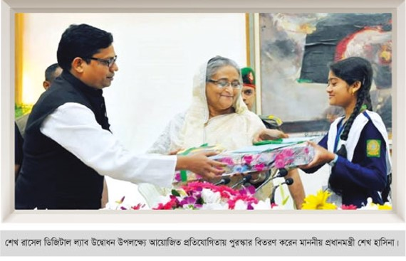
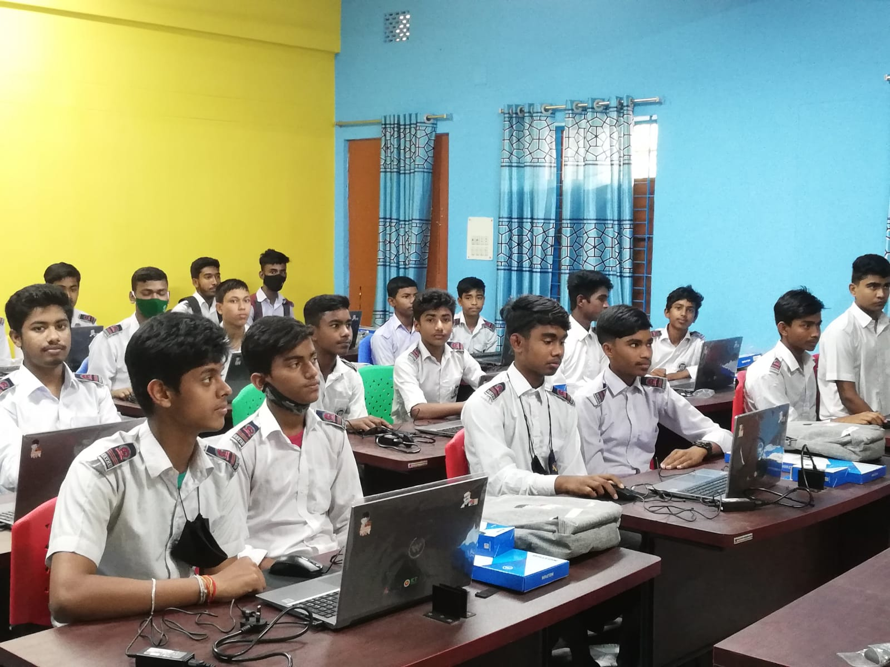
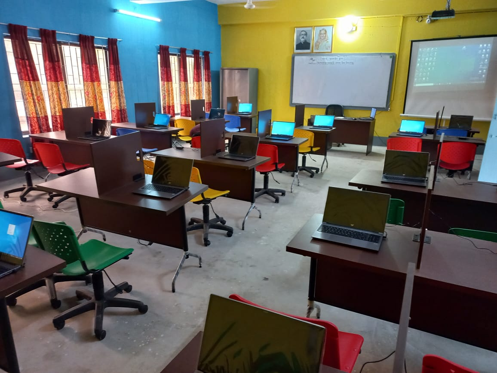
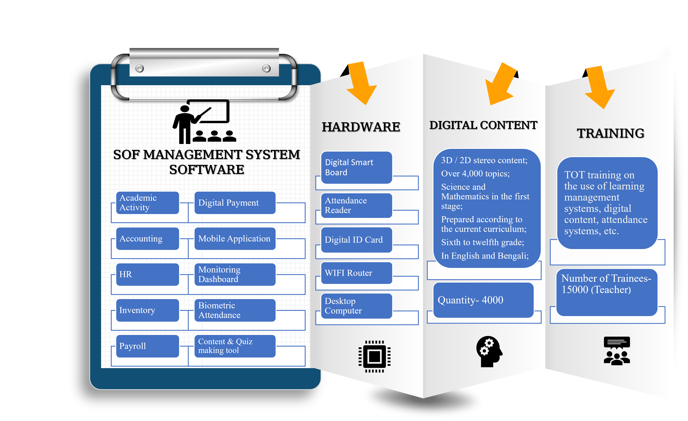

Introduction
The Department of Information and Communication Technology has devoted special attention to the Information Technology sector in extending ICT education across the country. To ensure the use and application of ICT and to develop skilled manpower, Sheikh Russel Digital Labs are being established in various educational institutions under the direction of the Honourable Prime Minister on the initiative of the Information and Communication Technology Division and under the supervision of the Department of Information and Communication Technology (DoICT). The goals of establishing those labs are generating a conducive environment of ICT education for primary, secondary, and higher secondary students and providing informational IT training to interested youth with the prospects to acquire profitable employment opportunities at home and abroad.

Honorable Prime Minister Sheikh Hasina distributed prizes in the competition organized on the occasion of the inauguration of Sheikh Russell Digital Lab
The establishment of Sheikh Russel Digital Lab (SRDL) is being constructed under the leadership of the honourable State Minister of ICT Division, Mr. Junaid Ahmed Palak MP, and with the support of the honourable Adviser, Mr. Sajib Wazed. Sheikh Russel Digital Lab has been set up in 9001 educational institutions across the country under the overall management of the Senior Secretary of the ICT Department in collaboration with the Director-General and Project Director of the ICT Department, all Deputy Commissioners and Upazila Nirbahi Officers, District Education Officers, District-Upazila ICT Officers, Upazila Secondary Education Officers and all concerned personnel. Following this, in Sheikh Russel Digital Lab Establishment Project (Phase II), there are 5000 "Sheikh Russel Digital Lab" and 300 "Sheikh Russel School of Future" installation activities are ongoing in educational institutions (schools, colleges, madrashas or equivalent educational institutions, government-related educational institutions).
Project Background
The importance of Digital Bangladesh in apprehending the dream of a self-sufficient Bangladesh cannot be overstated. The government has identified the ICT sector as a way to create a creative and innovative education system, increase employment, improve the overall quality of life of the people and appreciate the dream of Digital Bangladesh. To achieve the Vision 2021 Digital Bangladesh announced and directed by the Honourable Prime Minister, the Department of Information and Communication Technology under the Division of ICT has set up 4001 Sheikh Russel Digital Labs along with 15 in Saudi Arabia, 65 Language Learning Labs and 160 Digital Classrooms in primary schools across the country. The first project was approved at the ECNEC meeting on 23/12/2014 and the project was completed in September 2019.

Students are participating in ICT Training at Sheikh Russel Digital Lab
Following the success of this project, “Sheikh Russel Digital Lab Establishment Project (Phase II)” was adopted. Through this project, initiatives have been taken to establish 5000 Sheikh Russel Digital Lab and 300 Sheikh Russel Schools of Future out of 300 parliamentary seats each in each parliamentary constituency across the country. The process of establishing labs is well begun. The project has been approved at the ECNEC meeting on 26/08/2020. Expansion of ICT education from the grassroots level is considered a priority to address the challenges of the Fourth Industrial Revolution and to make Bangladesh a happy and prosperous country through the implementation of Vision 2041 announced by the Honourable Prime Minister. Over and above, training given to the students in coding and programming education from the primary and secondary level make them more creative and innovative to tackle the competition in the Fourth Industrial Revolution sector with their resourceful qualities. Moreover, the concept of the Sheikh Russel Digital Lab project will play a leading role in the sustainability and expansion of 'Digital Bangladesh' activities with the aim of building a knowledge-based society, developing skilled human resources, and turning the country into a developed country by 2041.
Concept of Sheikh Russel School of Future
There is no substitute for high-quality technological education. The "School of Future" is built on the foundation of pedagogical change in education, school architecture, critical thinking & problem-solving skills and modern technology. To achieve this visionary goal, we need to go beyond the conventional classroom and integrate new technological improvements with hardware, digital content, software, School of Future Management Systems and new technologies (3D Printer, MR Tools, Robotics, Programmable etc) suitable for coping with the competition of 4th Industrial Revolution. The Sheikh Russel School of Future aims to equip our students with all classroom facilities such as creative & constructive thinking, innovative skills and imparting knowledge and skills in the ICT sector through training in coding and programming education. The components of the Sheikh Russel School of Future have been selected based on these three concepts: education, architecture and technology. Students will be more interested to learn about the technologies of the 4th Industrial Revolution - especially the unique combination of new technologies like Nano, Cloud, lot, Robotics, Artificial Intelligence, Sensitive Drones, Blockchain as well as Electronics, Microchip and Robotics. They also get practical ideas about other technologies, including Lego sets, Arduino Starter Kit, Brick Pie Set, Mac Block Ultimate etc.

Sheikh Russel School of Future Components
Future strategies
The Department of Information and Communication Technology has been working through various projects and programs by establishing reliable connectivity including development of technological infrastructure, building skilled human resources, creating decent work and establishing e-services to ensure the best use and application of information technology and build a sustainable digital Bangladesh. Initiatives have been taken to set up high-level labs along with Sheikh Russel Digital Lab across the country with the goal of providing an education system with skills development and training in technology-based, creative and innovative knowledge growth, learning environment development, and quality thinking and problem-solving. Necessary steps are being taken for online monitoring and smooth management by connecting the labs through the Integrated Platform. These labs will be developed as hubs for ICT education to help students with creative education, innovative idea generation and 4IR challenges. From this lab, students will be trained in various programming disciplines to become nationally and internationally skilled human resources and later suitable students will be selected for further advanced training through Sheikh Hasina Institute for Frontier Technologies (SHIFT). Sheikh Russell Digital Lab will play a highly effective and up-to-date role in establishing an effective ecosystem in ICT education. In the 2021 plan announced by the government, the lab will play a pioneering role in educating millions of students at the secondary and higher secondary level in Sheikh Russel Digital Lab and Sheikh Russel School of Future in higher technical education and in tackling the 4IR challenge. This project will play a major role in the implementation of the Prime Minister's Delta Plan 2100.